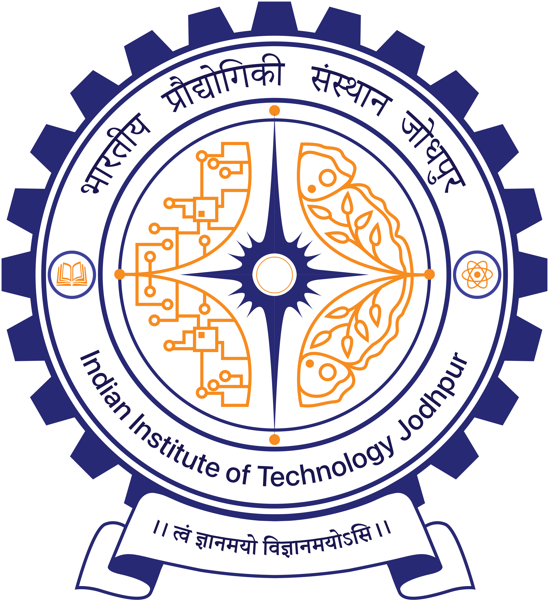

The Vision, Language, and Learning Group (VL2G) at the Indian Institute of Technology Jodhpur is a group of researchers and students led by Anand Mishra. The group addresses fundamental vision and language tasks and their applications to socially relevant problems. Currently, the group is primarily focusing on document intelligence, massively multilingual visual text understanding, and fine-grained video understanding, and their applications in various domains, including but not limited to education and assistive technologies.
News
[For more news, scroll down]- [June 2025] Our work on Video Moment Retrieval got accepted at ICCV 2025. (NEW)
- [January 2025] Abhirama participated in Google Deepmind Research Symposium 2025. (NEW)
- [December 2024] Abhirama's work on Audio QA is accepted in ICASSP 2025. (NEW)
- [December 2024] Yogesh presented his AAAI 2024 work at Vision India. This special session at ICVGIP features top-tier publications in computer vision authored by researchers affiliated with Indian institutions. (NEW)
- [December 2024] Nakul and Shreya's work patentLMM is accepted in AAAI 2025. (NEW)
- [November 2024] Yogesh has been recognized as one of the outstanding reviewer at BMVC'25.
- [October 2024] Nakul and Shreya won the IIT Jodhpur Director's prize for Best Academic Innovation work from students among all BTech programs.
- [October 2024] Our work on Video Moment Retreival has been accepted in ICVGIP 2024!.
- [September 2024] Abhirama completed a summer internship at Adobe Research Bangalore, where he contributed to project on Multimodal Deep Learning
- [September 2024] Abhirama was invited to present his work at Young Researchers’ Forum on Data and AI for Public Good, held at IISc Bangalore.
- [September 2024] Abhirama's work on Multimodal Knowledge-enabled VQA is accepted in EMNLP main track!
- [August 2024] Our Visual Translation work is accepted in the ICPR 2024. Check out the project page(NEW)
- [July 2024] Neelu and Anik's work on Query-based Chart Image Mining is accepted in the IJMIR.
- [April 2024] Nakul Sharma's Sketch-guided Image Inpainting work is accepted in the CVPR workshop 2024.
- [Feb 2024] Abhirama presented his IJCAI 2023 work on retrieval-based VQA in the 18th ACM-India Academic Research and Careers for Students (ARCS) Symposium.
- [Feb 2024] Yogesh and Shreya participated in Google India Research Week 2024.
- [Dec 2023] Yogesh Presented his CVPR 2023 work at Vision India, ICVGIP.
- [Dec 2023] Two papers accepted in AAAI 2024.
- [October 2023] Three papers from the group have been showcased at AI-India Track at AI-ML Systems 2023.
- [July 2023] Shreya received the ACM-W scholarship for attending ICDAR 2023 in San Jose, CA.
- [June 2023] Abhirama received the MSR Travel Grant for attending IJCAI 2023 in Macao.
- [April 2023] Our work on Retrieval-Based Visual Question Answering is accepted in IJCAI 2023 (15% acceptance rate).
- [April 2023] Our work on Flow chart to code generation is accepted in ICDAR 2023.
- [April 2023] We are hosting Summer Challenge on Writer Verification (NCVPRIPG 2023). Check out the challenge website.
- [March 2023] Our work on Few-shot Referring Relatioship is accepted at CVPR 2023.
- [February 2023] Prajwal won the best poster award for VISTOT at Industry Day.
- [January 2023] Shreya won the best poster award for Flowchart work at Prometeo.
- [December 2022] Prajwal presented VISTOT at EMNLP 2022, Abu Dhabi.
- [December 2022] Nakul Presented logo work at ICVGIP 2022, IIT Gnadhinagar.
- [December 2022] Shreya got selected for the 2023 Mitacs Globalink Research Internship program.
- [September 2022] Abhirama won first prize in the “Experiential Interface” track for his work on “Retrieval-based VQA” in Youth Conclave organized by INAE and SERB
- [December 2022] Our logo work accepted at ICVGIP 2022.
- [November 2022] Prajwal and Abhirama have attended AACL-IJCNLP 2022 virtually and presented their paper COFAR.
- [October 2022] Thanks to Accenture Labs for a Gift Grant.
- [October 2022] Our works COFAR and VisTOT has been accpeted at AACL-IJCNLP 2022, EMNLP 2022 , respectively.
- [October 2021] PhD student Abhirama got selected as a PMRF fellow.
- [July 2021] Our work on Few-shot Visual Relationship Co-Localisation with Revant Teotia, Vaibhav Mishra and Mayank Maheshwari got accepted in ICCV 2021. The paper and code are available now.
- [June 2021] Got selected for Microsoft Academic Partnership Grant (MAPG) 2021.
- [March 2021] Dr. Karteek Alahari e-visited our group and interected with students.
- [March 2021] Website of VL2G is up.
Broader Research Focus
Funding
Our research has been generously supported by a range of sponsors, including
|  | ![]() |
|
 |
 |
 |
| |
|
 |